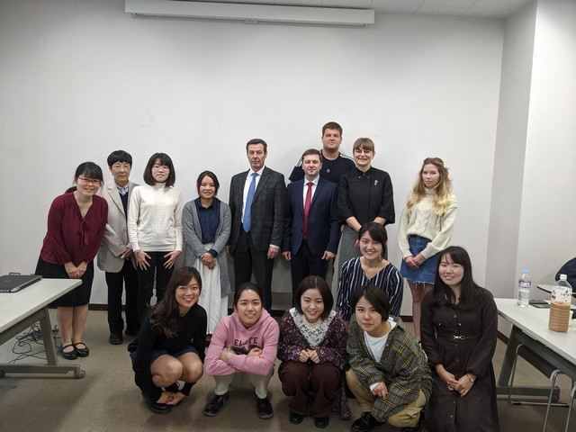

アクティビティ
2020/02/28

2019/10
サハリン国立総合大学から学生受入
2019年10月に11日間、サハリン国立総合大学より学部生5名、教員2名を受入れ、人工光型植物工場や養蜂、マーケティングに関する講義、インターンシップを行いました。
もっと見る2019/10
国立沿海地方農業アカデミーから学生受入

2019年10月に18日間、国立沿海地方農業アカデミーより学部生5名、教員1名を受入れ、人工光型植物工場や養蜂、マーケティングに関する講義、インターンシップを行いました。
もっと見る2019/09
2019/09
2019/07
2019/06
ノボシビルスク農業大学との交流協定締結
ノボシビルスク農業大学の学長が千葉大学を訪問し、FARMプログラムへの協力について合意するとともに、学術及び学生交流協定を締結しました。
2019/04
2019/04
極東農業大学との交流協定締結
極東農業大学の副学長が千葉大学を訪問し、FARMプログラムへの協力について合意するとともに、学術及び学生交流協定を締結しました。
2019/02/08-09
日本留学海外拠点連携推進事業主催 日本留学フェア（於ロシア連邦・ハバロフスク ）

2019年2月8日、9日に開催されたハバロフスクでの日本留学海外拠点連携推進事業主催 日本留学フェアに参加しました。
もっと見る2019/02/01
施設園芸シンポジウム

2019年2月1日、柏の葉カンファレンスセンターにて千葉大学・日本型施設園芸産業革新化ネットワーク共同主催で施設園芸シンポジウム「日本における施設園芸技術開発の動向と極東ロシアとの連携の可能性」を開催しました。
もっと見る2018/12
国立沿海地方農業アカデミー教員来訪

2018年12月4日～2018年12月14日の期間、国立沿海地方農業アカデミーの教員１名が来学し、植物工場、養液栽培、組織培養に関する研究インターンシップを行いました。
もっと見る2018/10
サハリン国立総合大学から学生受入

昨年度12月に続き、2018年10月に11日間、サハリン国立総合大学より学部生5名、教員3名を受入れ、人工光型植物工場に関する講義、インターンシップを行いました。
もっと見る2018/09
国立沿海地方農業アカデミーへ学生派遣

2018年9月20日～9月27日の期間、千葉大学園芸学部生・大学院生4名、法政経学部生1名、文学部生1名が、国立沿海地方農業アカデミーを訪問しました。
もっと見る2018/09

2018/07
国立沿海地方農業アカデミーから学生受入

昨年度11月に続き、2018年7、8月に、国立沿海地方農業アカデミーより学部生5名、教員2名を受入し、人工光型植物工場に関する講義、インターンシップを行いました。
もっと見る2018/03

2018/03

2018/03
日本・ロシア極東農業ビジネスフォーラム2018

2018年3月22日、柏の葉カンファレンスセンターにて日本・ロシア極東農業ビジネスフォーラムを開催し、協定校である国立沿海地方農業アカデミー、サハリン国立総合大学の教員及び関係企業が参加し、ビジネス交流の拡大と本事業の宣伝広報を日露双方に対して行ないました。
もっと見る2017/12
サハリン国立総合大学との交流協定締結
サハリン国立総合大学の学長が学生のプログラムに合わせて来訪し、FARMプログラムへの協力について合意するとともに、学術及び学生交流協定を締結しました。
2017/12

2017/11

2017/10
国立沿海地方農業アカデミーへ学生派遣
2017年10月、千葉大学園芸学部生1名、大学院生1名、教員1名が、国立沿海地方農業アカデミーを訪問しました。
2017/09
国立沿海地方農業アカデミーとの交流協定締結
国立沿海地方農業アカデミーの学長が千葉大学を訪問し、FARMプログラムへの協力について合意するとともに、学術及び学生交流協定を締結しました。
2017/09
世界展開力強化事業「極東ロシアの未来農業に貢献できる領域横断型人材育成プログラム」採択
千葉大学が申請した事業「極東ロシアの未来農業に貢献できる領域横断型人材育成プログラム」（通称FARMプログラム）が、平成29年度文部科学省「大学の世界展開力強化事業～ロシア、インド等との大学間交流形成支援～」に採択され、プログラムを開始いたしました。
このプログラムは、千葉大学環境健康フィールド科学センターを中心に行うこととなります。